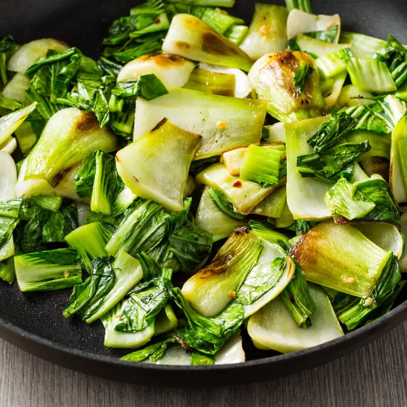

Veggies for Vegans a.k.a BOKCHOY

Ingredients
- 1 lb of bokchoy
- 3 tbsp of sugar
- oyster sauce
- 2 tbsp of minced garlic
Very simple dish to cook in under 6 minutes and in 4 steps!
How to become a vegan
- On medium heat, add bokchoy in with a bit of water and stir for 2 minutes
- Drizzle oyster sauce and add the minced garlic
- Cover lid for 2 minutes and let it steam for a bit
- Add sugar on top and serve dish while it is nice a hot!
Back